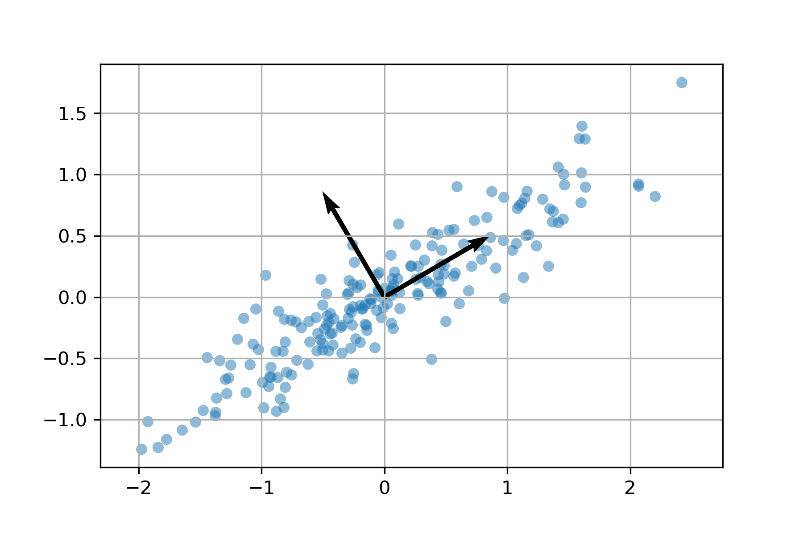
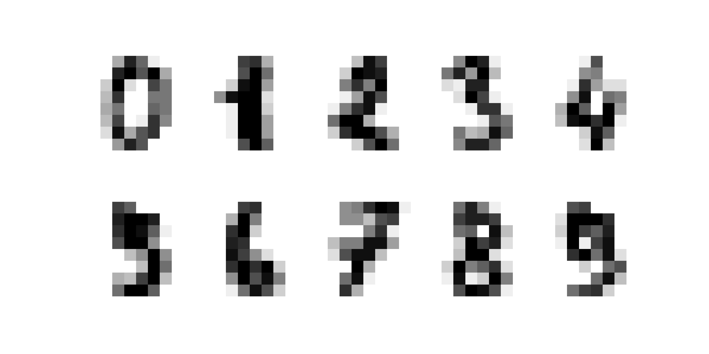
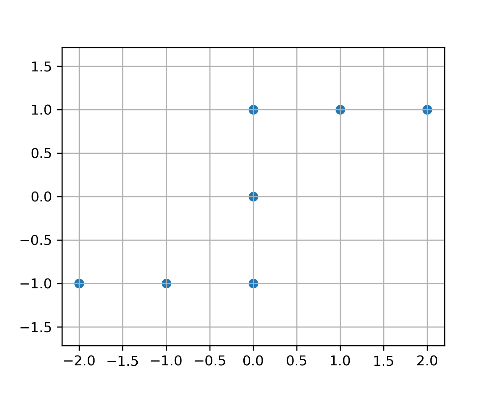

Singular Value Decomposition
Contents
Singular Value Decomposition#
Any \(m \times n\) matrix \(A\) has a singular value decomposition \(A = P \Sigma Q^T\) where \(P\) and \(Q\) are orthogonal matrices and \(\Sigma\) is a diagonal \(m \times n\) matrix.
An \(n \times p\) data matrix \(X\) represents a set of \(n\) samples in \(\mathbb{R}^p\) and projecting the data onto the first \(k\) principal components allows us to view the data in \(\mathbb{R}^k\). Usually \(k=2\) such that we can visualize the data in 2D.
All matrices in this chapter are real unless explicitly stated otherwise.
SVD Construction#
If \(A\) is any \(m \times n\) matrix, then \(AA^T\) and \(A^TA\) are both symmetric therefore both are orthogonally diagonalizable
Let \(A\) be an \(m \times n\) matrix.
If \(\lambda\) is a nonzero eigenvalue of \(AA^T\) then \(\lambda\) is an eigenvalue of \(A^TA\), and vice versa.
All eigenvalues of \(AA^T\) (and \(A^TA\)) are non-negative (that is, \(\lambda \geq 0\)).
The matrices \(AA^T\) and \(A^TA\) have the same set of positive eigenvalues. Label the eigenvalues in decreasing order \(\lambda_1 \geq \lambda_2 \geq \cdots \geq \lambda_r > 0\). The singular values of \(A\) are
Let \(A\) be an \(m \times n\) matrix and let \(\sigma_1 \geq \sigma_2 \geq \cdots \geq \sigma_r > 0\) be the singular values of \(A\). Then there are orthogonal matrices \(P\) and \(Q\) such that
This is called the singular value decomposition of \(A\).
Proof. Let \(\boldsymbol{q}_1,\dots,\boldsymbol{q}_n\) be orthonormal eigenvectors of \(A^TA\) chosen in order such that
Note that in fact \(A\boldsymbol{q}_i = \boldsymbol{0}\) for \(i=r+1,\dots,n\) since
Let \(Q\) be the orthogonal matrix
Now construct the matrix \(P\). Let
Note that
therefore each \(\boldsymbol{p}_i\) is an eigenvector for \(AA^T\) with eigenvalue \(\sigma_i^2\). Note also that
therefore each \(\boldsymbol{p}_i\) is a unit vector. Extend (by Gram-Schmidt algorithm) to an orthonormal basis \( \boldsymbol{p}_1,\dots,\boldsymbol{p}_r,\boldsymbol{p}_{r+1},\dots,\boldsymbol{p}_m\) of \(\mathbb{R}^m\). Define the orthogonal matrix
Compute
Finally, compute
Therefore \(AQ = P \Sigma\) and so \(A = P \Sigma Q^T\).
In the construction of the SVD, we may chose to first construct either \(P\) or \(Q\). The connection between the columns for \(i = 1,\dots,r\) are given by the equations:
Construct the SVD for
Since \(A^TA\) is a smaller matrix, let us first construct \(Q\). Compute
Therefore \(\sigma_1 = \sqrt{3}\) and \(\sigma_2 = \sqrt{2}\). By inspection, we find
Construct the matrix \(P\)
Extend to an orthonormal basis of \(\mathbb{R}^3\) by finding \(\boldsymbol{p}_3\) orthogonal to \(\boldsymbol{p}_1\) and \(\boldsymbol{p}_2\). There are different ways of doing this. Setup equations \(\langle \boldsymbol{p}_1 , \boldsymbol{p}_3 \rangle = 0\) and \(\langle \boldsymbol{p}_2 , \boldsymbol{p}_3 \rangle = 0\) in a linear system and solve
Therefore the SVD is given by
Let \(A = P \Sigma Q^T\).
\(\mathrm{rank}(A) = r\)
\(\| A \| = \sigma_1\)
\(\| A^{-1} \| = 1/\sigma_r\)
\(\mathrm{cond}(A) = \sigma_1 / \sigma_r\)
\(\mathrm{null}(A) = \mathrm{span} \{ \boldsymbol{q}_{r+1},\dots,\boldsymbol{q}_n \}\)
\(\mathrm{range}(A) = \mathrm{span} \{ \boldsymbol{p}_1,\dots,\boldsymbol{p}_r \}\)
Principal Component Analysis#
Let \(\boldsymbol{x}_1 , \dots , \boldsymbol{x}_n \in \mathbb{R}^p\) (viewed as row vectors) and let \(X\) be the \(n \times p\) data matrix where row \(k\) is given by \(\boldsymbol{x}_k\). Assume the data is normalized such that the mean value of each column of \(X\) is 0. The unit vector \(\boldsymbol{w}_1\) which maximizes the sum
is called the first weight vector of \(X\) (see Wikipedia:Principal component analysis). More generally, given weight vectors \(\boldsymbol{w}_1 , \dots, \boldsymbol{w}_{k-1}\), the \(k\)th weight vector of \(X\) is the unit vector \(\boldsymbol{w}_k\) which maximizes
where \(X_k\) is the projection of the data matrix \(X\) onto \(\mathrm{span} \{ \boldsymbol{w}_1 , \dots, \boldsymbol{w}_{k-1} \}^{\perp}\)
The projection coefficient \(\langle \boldsymbol{x}_i , \boldsymbol{w}_k \rangle\) is called the \(k\)th principal component of a data vector \(\boldsymbol{x}_i\).
Each \(\langle \boldsymbol{x}_k , \boldsymbol{w}_1 \rangle^2\) is the length squared of the orthogonal projection of \(\boldsymbol{x}_k\) onto \(\boldsymbol{w}_1\). Therefore the first weight vector \(\boldsymbol{w}_1\) points in the direction which captures the most information (ie. the maximum variance) of the data, and the second weight vector \(\boldsymbol{w}_2\) is orthogonal to \(\boldsymbol{w}_1\).
{kind=link}
The weight vectors \(\boldsymbol{w}_1 , \dots , \boldsymbol{w}_p\) are the right singular vectors of the matrix \(X\). In other words, let \(X = P \Sigma Q^T\) be a singular value decomposition of \(X\) and let \(\boldsymbol{q}_1, \dots, \boldsymbol{q}_p\) be the columns of \(Q\) corresponding to singular values \(\sigma_1 > \cdots > \sigma_p > 0\). Then \(\boldsymbol{w}_1 = \boldsymbol{q}_1 , \dots , \boldsymbol{w}_p = \boldsymbol{q}_p\).
Proof. Let \(X = P \Sigma Q^T\) be a singular value decomposition of \(X\) and note
since \(P\) is orthogonal. Since \(\Sigma\) is diagonal with diagonal entires \(\sigma_1 > \cdots > \sigma_p\), the maximum value of \(\| X \boldsymbol{w} \|^2\) occurs when \(Q^T \boldsymbol{w} = \begin{bmatrix} 1 & 0 & \cdots & 0 \end{bmatrix}^T\) therefore \(\boldsymbol{w}_1 = \boldsymbol{q}_1\). For general \(k\), note that the singular value decomposition \(X_k = P_k \Sigma_k Q^T_k\) is obtained from \(X\) by removing the singular values \(\sigma_1,\dots,\sigma_{k-1}\). Therefore the largest singular value of \(X_k\) is \(\sigma_k\) with corresponding right singular vector \(\boldsymbol{q}_k\) and therefore \(\boldsymbol{w}_k = \boldsymbol{q}_k\).
Find the first weight vector for the data given in the image below.

We expect \(\boldsymbol{w}_1 = \begin{bmatrix} 1/\sqrt{2} & 1/\sqrt{2} \end{bmatrix}^T\) since that direction clearly captures the most information. Form the data matrix
We don’t need to compute the full SVD of \(X\) but just the first right singular vector. Compute
The characteristic polynomial of \(X^TX\) is
The right singular vector \(\boldsymbol{q}_1\) for \(X\) is a unit eigenvector for \(X^TX\) for the eigenvalue \(\lambda_1 = 20\). Compute
The digits dataset from sklearn is a \(1797 \times 64\) data matrix \(X\) such that each row represents an \(8 \times 8\) pixel image of a handwritten number. The first 10 rows of X (reshaped from vectors of length 64 to \(8 \times 8\) matrices to visualize) are:
{kind=link}
Compute the first 2 weight vectors and find (again \(\boldsymbol{w}_1,\boldsymbol{w}_2\) reshaped from vectors of length 64 to \(8 \times 8\) matrices to visualize)
{kind=link}
We can see \(\boldsymbol{w}_1\) looks like a 3 and \(\boldsymbol{w}_2\) looks like 0. Project the entire dataset onto these weight vectors and label each data point by a color according to the digit:

We can see that the 3s are to the right in the horizontal direction since these points most similar to \(\boldsymbol{w}_1\), and the 0s are at the top in the vertical direction since these points most similar to \(\boldsymbol{w}_2\). We can make other interesting observations such as the 4s are opposite to the 3s and orthogonal to 0s, and 7s and 1s are opposite to 0s and orthogonal to 3s.
Pseudoinverse, Least Squares and the SVD Expansion#
The pseudoinverse \(A^+\) solves the least squares problem \(A \boldsymbol{x} \cong \boldsymbol{b}\) by \(\boldsymbol{x} = A^+ \boldsymbol{b}\).
Let \(A\) be a \(m \times n\) matrix of rank \(r\) and let \(A = P \Sigma Q^T\) be a SVD of \(A\). The pseudoinverse of \(A\) is
where
If \(A\) is invertible, then \(A^+ = A^{-1}\).
Let \(A\) be an \(m \times n\) matrix with \(\mathrm{rank}(A) = n\) and let \(\boldsymbol{b} \in \mathbb{R}^m\). The least squares approximation of the system \(A \boldsymbol{x} \cong \boldsymbol{b}\) is given by \(\boldsymbol{x} = A^+ \boldsymbol{b}\).
Proof. Let \(A = P \Sigma Q^T\) be a SVD of \(A\). Let \(P^T \boldsymbol{b} = \boldsymbol{c}\) and write
Since \(P\) is an orthogonal matrix we have
The matrix \(\Sigma\) is of the form
and so only the first \(n\) entries of \(\Sigma \boldsymbol{v}\) are nonzero for any vector \(\boldsymbol{v} \in \mathbb{R}^n\). Therefore the minimum value \(\| A \boldsymbol{x} - \boldsymbol{b} \| = \| \Sigma Q^T \boldsymbol{x} - \boldsymbol{c} \|\) occurs when
and so \(\boldsymbol{x} = Q \Sigma^+ \boldsymbol{c}\). Altogether, we have
Let \(A = P \Sigma Q^T\). The SVD expansion of \(A\) is
Note that each product \(\boldsymbol{p}_i \boldsymbol{q}_i^T\) is a \(m \times n\) matrix of rank 1.
Let \(A\) be a \(m \times n\) matrix and let \(B\) be a \(n \times \ell\) matrix with SVD expansions
If \(\{ \boldsymbol{q}_1,\dots,\boldsymbol{q}_r \}\) and \(\{ \boldsymbol{u}_1,\dots,\boldsymbol{u}_s \}\) are orthogonal sets of vectors, then \(AB = 0\).
Let \(A = P \Sigma Q^T\). The truncated SVD expansion of rank \(k\) of \(A\) is
Suppose we want to solve the system \(A \boldsymbol{x} = \boldsymbol{b}\) however the right side is corrupted by noise \(\boldsymbol{e}\) and we must work with the system
Solving directly we get
and the term \(A^{-1}\boldsymbol{e}\) is called the inverted noise which may dominate the true solution \(\boldsymbol{x} = A^{-1} \boldsymbol{b}\). From the SVD expansion, we see that most of \(A\) is composed of the terms \(\sigma_i \boldsymbol{p}_i \boldsymbol{q}_i^T\) for large singular values \(\sigma_i\). If we know that the error \(\boldsymbol{e}\) is unrelated to \(A\) in the sense that \(\boldsymbol{e}\) is (mostly) orthogonal to the singular vectors \(\boldsymbol{p}_i\) of \(A\) corresponding to large singular values, then the truncated SVD expansion of the pseudoinverse
gives a better solution
since the term \(A^+_k\boldsymbol{e}\) will be smaller. In other words, we avoid terms \(\sigma_i^{-1} \boldsymbol{p}_i \boldsymbol{q}_i^T\) in the SVD expansion of \(A^{-1}\) for small singular values \(\sigma_i\) which produce large values \(\sigma_i^{-1}\) which may amplify the error. This is the strategy for image deblurring and computed tomography in the next sections.
Exercises#
Exercise 1. Find the singular value decomposition of the matrix
Exercise 2. Find the singular value decomposition of the matrix
Exercise 3. Determine whether the statement is True or False. (Assume all data matrices are normalized.)
Let \(X\) be a \(n \times p\) data matrix and let \(\boldsymbol{x}_i , \boldsymbol{x}_j \in \mathbb{R}^p\) be two different rows of \(X\) such that \(\| \boldsymbol{x}_i \| < \| \boldsymbol{x}_j \|\). If \(\boldsymbol{w}_1\) is the first weight vector of \(X\), then \(| \langle \boldsymbol{x}_i , \boldsymbol{w}_1 \rangle | < | \langle \boldsymbol{x}_j , \boldsymbol{w}_1 \rangle |\).
Let \(X\) be a \(n \times p\) data matrix and let \(\boldsymbol{x}_i , \boldsymbol{x}_j \in \mathbb{R}^p\) be two different rows of \(X\) such that \(\langle \boldsymbol{x}_i , \boldsymbol{x}_j \rangle = 0\). If \(\boldsymbol{w}_1\) is the first weight vector of \(X\) and \(\langle \boldsymbol{x}_i , \boldsymbol{w}_1 \rangle = 0\) then \(\langle \boldsymbol{x}_j , \boldsymbol{w}_1 \rangle = 0\).
Let \(X\) be a \(n \times 2\) data matrix and let \(Y\) be the matrix with the same columns as \(X\) but switched. (In other words, the first column of \(Y\) is the same as the second column of \(X\), and the second column of \(Y\) is the first column of \(X\).) If \(X\) and \(Y\) represent the same set of data points, then all the singular values of \(X\) equal.
Let \(X\) be a \(n \times 2\) data matrix and let \(Y\) be the matrix with the same columns as \(X\) but switched. (In other words, the first column of \(Y\) is the same as the second column of \(X\), and the second column of \(Y\) is the first column of \(X\).) If \(X\) and \(Y\) represent the same set of data points, then \(\boldsymbol{w}_1 = \begin{bmatrix} 1/\sqrt{2} & 1/\sqrt{2} \end{bmatrix}^T\).
Exercise 4. Find the weight vectors for the data matrix \(X\) representing the points:
{kind=link}
Exercise 5. Suppose \(X\) is a \(100 \times 4\) data matrix such that
Find all the weight vectors of \(X\).
Exercise 6. Suppose we want to solve a system \(A \boldsymbol{x} = \boldsymbol{b}\). A small change \(\Delta \boldsymbol{b}\) produces a change in the solution
Describe the unit vector \(\Delta \boldsymbol{b}\) that will produce the largest change \(\| \Delta \boldsymbol{x} \|\).
Exercise 7. Find the rank 2 pseudo inverse
of the matrix
(Note: the columns of \(A\) are orthogonal.)
Exercise 8. Let \(A\) be a \(m \times n\) matrix with singular value decomposition \(A = P \Sigma Q^T\). Let \(k < \min\{m,n\}\) and let
Describe the singular value decomposition of \(A - A_k\).